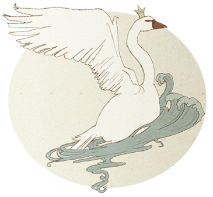
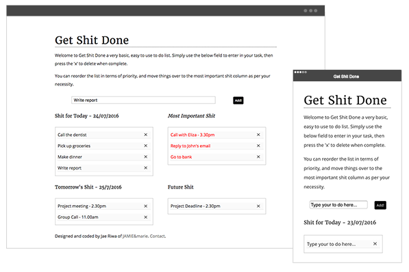
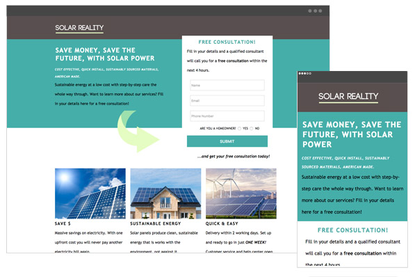
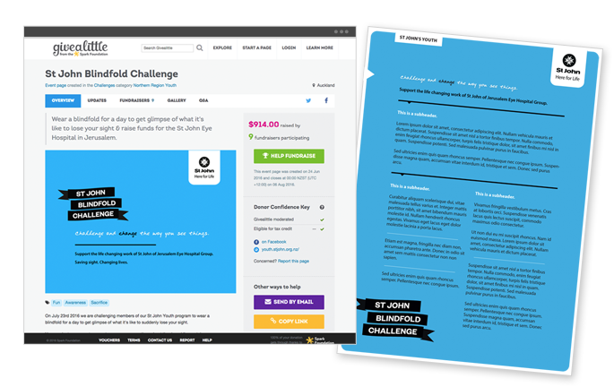
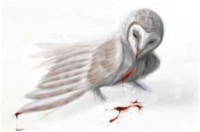
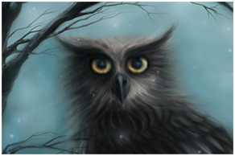

'Sup, I'm Jamie
I have been hand coding sites since the age of 13, when I became frustrated with Geocities Pagebuilder and found out that
I could position every pixel however I wanted using HTML and CSS. Armed with Notepad and Paint on a clunky Windows 95 computer,
my fascination with web design and development began...
Although responsive design and Javascript are more my cup of tea these days, I still remember the days of slicing images in Paint and
putting everything together by building complex tables with enough colspans and rowspans to get the job done. I have become vastly interested
in the development of the web, where information meets interaction, where the possibilities are endless.
Come with me on a journey through time and space, and view some of my projects below...
Front End Developer
Although still learning Javascript and jQuery, I am excited about the potential for future projects and the added functionality for
front-end design.

Get Shit Done
This is an example of what can be achived with a little Javascript, jQuery and a dash of fully responsive HTML & CSS.
Get Shit Done is a little in-browser program that allows you to enter
to-dos, remove when complete, and move them around to keep note of future and most important tasks.
View Here

Landing Page
An earlier project - a landing page template for a fictitious American-based energy supplier. All landing pages have one key action, the focus of this one being to persuade
the user to try a free consultation.
Solar reality is fully responsive, and uses HTML5 & CSS, with form validation written in Javascript.
View Here
Design
Although front end development is my passion, I still enjoy graphic design, particularly when designing for use on web-based platforms.

St John Youth - Blindfold Challenge
St John Youth are doing a blindfold challenge using social media - specifically the web platform Give a Little,
a site that allows people to fundraise for specific events and projects.
The brief for the project was to make branding and media to be used across the different projects. It had to align with current
St John Youth branding, be fun, bright and easily communicated.
"The Blindfold Challenge" is a challenge meant to help raise money for the Eye Hospital in Jerusalem, the original home of the
knights of St John. They treat thousands of people each year with various forms of blindness, and other eye conditions. One of their
aims is to treat people regardless of age, gender, race, or religion.
The fundraising project is aimed at youth members, the goal is to convince them to relate and empathize with those with
seeing disabilities, to provide solidarity, and to raise awareness of St John Youth and the work of the eye hospital in Jerusalem.
View Here
Back to Top
Illlustration
Art, illustration and comics are an incredibly important part of my life. Please see a few pieces below of some exhibition work,
as well as some of my favourites.


Want to see more?
I regularly post art on my Instagram, where you can find me @ruayla, there are few more indepth shots of the above pieces at my Behance page.